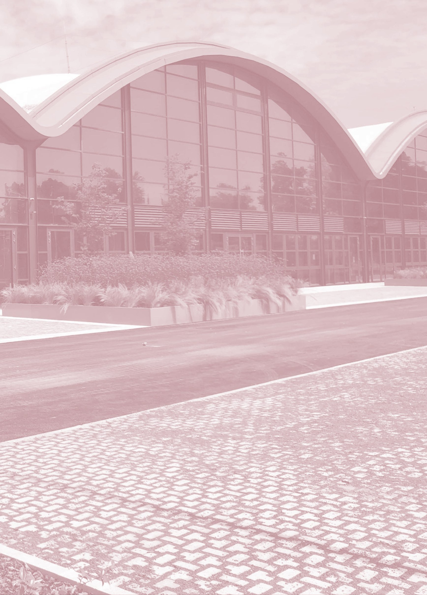

About the
conference
In an era of accelerating climate crisis, the role of clear, compelling, and actionable communication has never been more critical.
Visualising Climate is the first global conference on data visualisation for climate and environmental sciences. Bringing together scientists, artists, communicators, and journalists, this event will serve as a meeting point between data and storytelling, evidence and perception, art and science.
Over three days of talks, workshops, and informal conversations, participants will delve into how data can be visualised to inform, engage, inspire action, and influence policy. This summit is a space to share tools, techniques, and case studies that push the boundaries of visual narratives, foster interdisciplinary collaboration and co-creation, and empower change through data visualisation.
We believe no single discipline holds the whole answer. Science gives us the rigour, the models, and the evidence base without which visualisation is just decoration. Media gives us reach, narrative, and the instinct for what makes a story travel beyond the people who already care. Art gives us form, feeling, and the courage to represent what numbers alone cannot: loss, scale, urgency, hope. Visualising Climate is built around these three pillars — Science, Media, and Art — not as separate tracks but as a single conversation, because the most consequential climate visualisations of the past decade have rarely come from one discipline working alone.
The stakes for getting this right are rising. Climate data has never been more abundant, more granular, or more publicly accessible — and yet the gap between what we know and what we collectively act on keeps widening. Misinformation spreads faster than nuance. Complex, uncertain, planetary-scale phenomena resist easy charts. Visualising Climate exists because closing that gap is a design problem as much as a scientific one, and because the people best equipped to solve it are rarely in the same room: researchers who understand the data, journalists who understand the audience, and artists who understand how to make people feel what a dataset means.
Hosted in Bologna for its first edition, Visualising Climate is conceived as the beginning of an ongoing community rather than a single event. We want it to be the place where a satellite scientist compares notes with a data journalist, where a museum designer finds their next collaborator, and where practitioners test ideas that are still too new to have a name. Every talk, workshop, paper, and conversation gathered in this book is a contribution to that shared, evolving practice.
Visualising Climate is where the worlds of information and imagination collide to reshape how we see and respond to a changing climate and its impacts and risks for humanity and ecosystems. Come see the data and imagine new ways forward.